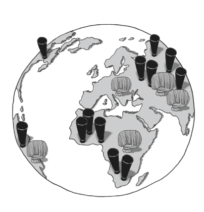
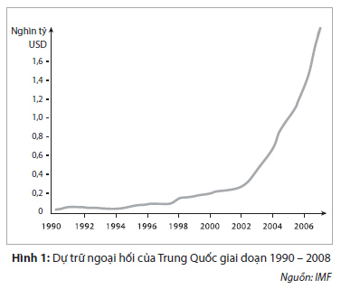
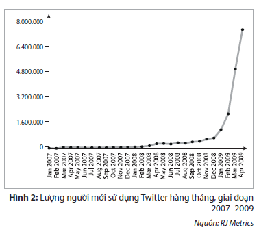
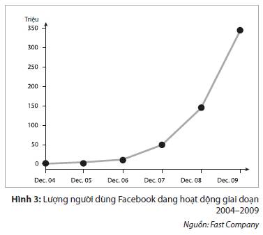
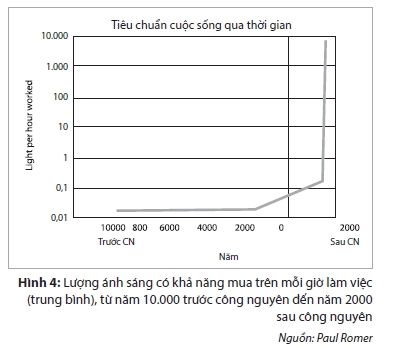
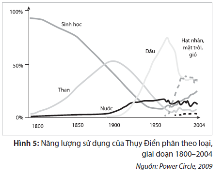
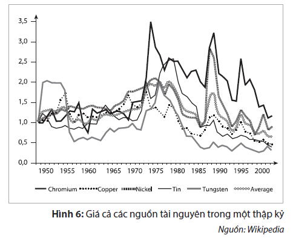
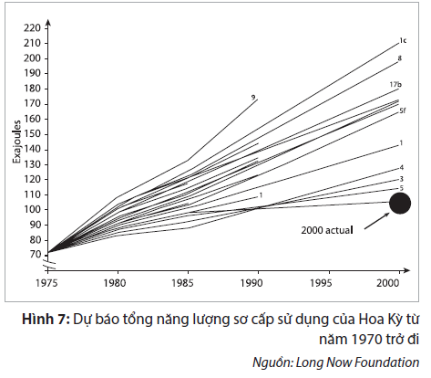
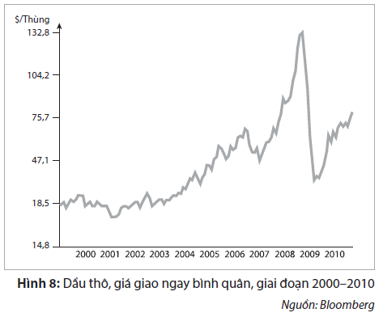
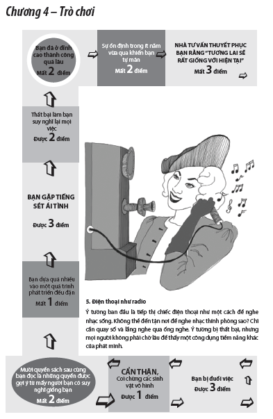

4. Sự Thay Đổi Vũ Bão

“Một điều được mong đợi từ lâu khi cuối cùng xảy đến sẽ có dạng là điều không mong đợi”
Mark Twain
 Tôi nên làm nghề gì?
Tôi nên làm nghề gì?
“Tôi nên làm nghề gì?” là tên một trò chơi phổ biến trong thập niên 1960. Trò chơi này chú trọng vào việc khơi gợi trẻ nhỏ suy nghĩ về loại nghề nghiệp mà chúng muốn theo đuổi. Trò chơi cho rằng một cách lý tưởng thì các cậu bé nên trở thành bác sĩ, phi hành gia và nhà khoa học, trong khi các cô bé được định sẵn để trở thành y tá, nữ tiếp viên hàng không và vũ công múa ba lê. Trò chơi cũng có nhiều thẻ để thưởng cho người chơi một bộ các kỹ năng nghề nghiệp tương lai hoặc những đặc điểm tính cách cần thiết. Các cậu bé có thể trở nên thông minh – một phẩm chất đưa chúng thẳng tiến một đường đến Giải thưởng Nobel, còn các cô bé có thể phải chịu sự vụng về hoặc một khuôn mặt xấu xí như khi bị trang điểm cẩu thả, một điều gì đó khiến chúng mãi mãi không đủ tiêu chuẩn làm người phục vụ thức uống ở độ cao 9144m (~ 30.000 feet) để kiếm tiền.
“Tôi nên làm nghề gì?” và vô số các loạt phim truyền hình trước đó cho thấy cách thức xã hội thay đổi trên nhiều phương diện khác nhau. Sự thay đổi ở đây không chỉ là vấn đề một số công nghệ mới biến mất và các ngành nghề mới lên ngôi. Các giá trị thay đổi. Hành vi thay đổi. Con người thay đổi. Xã hội phân khúc và hòa trộn. Một số xã hội hiện đại hóa và phát triển trong khi số khác sụp đổ hoàn toàn. Sự đổi thay hỗn loạn và đa chiều này đều có chung chủ đề là điều không mong đợi, dường như có cây đũa phép không ngừng làm biến đổi xã hội và đưa xã hội vào con đường dẫn đến một tương lai vô định.
Năm 1993, tôi và bạn tôi Nicklas đã chơi một trò chơi đại loại như trò “Tôi nên làm nghề gì?”. Lúc chúng tôi xổ ra với nhau ý tưởng về những gì chúng tôi muốn làm trong cuộc đời mình, ít nhất là trong vài năm tới, tôi bị giằng co giữa lý trí – thúc giục tôi theo học trường kinh doanh – và con tim, vốn định sẵn niềm đam mê mãnh liệt trở thành một nhà sản xuất phim. Trong khi đó, Nicklas lại có ý tưởng kỳ quái là muốn học tiếng Trung Quốc. Tôi đã đáp lại bằng câu gì đó kiểu như “chỉ tổ phí thời gian!”. Hai mươi năm sau, Nicklas có thể nhìn lại – và quả thật đã hướng đến – một sự nghiệp thành công và phát triển, nhờ một phần không nhỏ vào những kỹ năng nói tiếng Trung Quốc của mình. Câu hỏi mà mọi người – hay ít nhất là tôi – phải đặt ra là tại sao ý tưởng học tiếng Trung Quốc ở những năm đầu thập niên 90 lại có vẻ là một lựa chọn viễn vông khi mà ngày nay Trung Quốc đang trở thành một trong những siêu cường kinh tế của thế giới. Có thể tự tìm thấy câu trả lời khi chúng ta nghiên cứu làm thế nào Trung Quốc phát triển từ đầu những năm 1990 và vươn lên trong những thập niên sắp tới.
Hiệu ứng Đổ Tương Cà Chua
Điều thú vị trong Hình 1 là hình dạng của đường cong. Thay vì tăng chậm và theo hướng có thể dự báo được, dự trữ ngoại hối có vẻ bùng nổ vào đầu những năm 2000 do sự tăng vọt trong ngân khố quốc gia của Trung Quốc. Điều này lý giải vì sao vào những năm 1990 ít ai trong chúng ta xem trọng Trung Quốc. Tôi nhớ mình từng đọc quyển sách có tựa Trung Hoa trỗi dậy khi đang học ở trường kinh doanh vào giữa những năm 1990 và nghĩ rằng những gì mô tả trong sách chỉ là một viễn cảnh tương lai xa vời nào đó xảy ra khi mà ta đã sử dụng robot giúp việc nhà và chế ra những viên thuốc chữa được mọi thứ bệnh. Đường cong tăng trưởng như của Trung Quốc đánh lừa khiến chúng ta nghĩ rằng chẳng có gì đáng kể xảy ra cho đến khi tất cả mọi thứ xảy đến cùng một lúc. Sự tăng trưởng của hai thương hiệu truyền thông xã hội được biết đến nhiều nhất trong vài năm vừa qua cũng có hình dạng đường cong tương tự – xem Hình 2 và Hình 3.

Nếu vào giữa những năm 1990 bạn tổ chức một buổi hội thảo chủ đề về Trung Quốc và truyền thông xã hội, sẽ chỉ có một nhúm người tham dự, là những người hoặc cực kỳ nhìn xa trông rộng hoặc cực kỳ có nhiều thời giờ để phí phạm.
Một sự phát triển trông có thể có dạng nằm ngang và dự báo được vào lúc đầu, và chỉ qua một đêm đã bùng nổ.

Trong thập kỷ thứ hai của thế kỷ này, đây lại là những chủ đề phổ biến hơn hết trong các cuộc hội thảo và trong danh mục sách kinh doanh bán chạy nhất.
Đường cong theo hàm số mũ này – khởi đầu là nằm ngang, sau đó là sự gia tăng bùng nổ gần như theo đường thẳng đứng – đôi khi được gọi là Hiệu ứng Đổ Tương Cà Chua. Đó là một tên gọi thích hợp. Khi đổ tương cà chua từ chai thủy tinh hiệu Heinz, đầu tiên bạn hoàn toàn chẳng đổ được gì, sau đó một giọt tương lỏng đo đỏ rơi xuống mà bạn không muốn nhỏ lên trên thức ăn của mình, rồi thì một đống tương cà chua đổ xuống có khả năng nhấn chìm mọi thứ có trên đĩa. Không có gì sau đó có một chút, và rồi có tất cả – đó là Hiệu ứng Đổ Tương Cà Chua.
Tính chất dễ đánh lừa người khác của đường cong này là ở chỗ bạn không bao giờ thực sự biết những gì bạn đang nhìn thấy. Một sự phát triển trông có thể có dạng nằm ngang và dự báo được vào lúc đầu, chỉ qua một đêm đã bùng nổ. Ví dụ minh họa cho điều này là sự sụp đổ nền tài chính năm 2008. Vào mùa hè năm 2007, khi các ngân hàng báo cáo các khoản lỗ do cho vay khi không đủ độ tín nhiệm, nhận định chung là vấn đề này sẽ được chính các ngân hàng ngăn chặn và giải quyết dễ dàng. Chỉ một năm sau đó, hệ thống nổ tung, phải mang gánh nặng là mớ bòng bong của các giao dịch phát sinh không rõ ràng, các giao dịch hoán đổi và hàng núi nợ nần. Không có gì, sau đó có một chút và rồi có tất cả.
Không thể dự báo được Hiệu ứng Đổ Tương Cà Chua không phải vì những thứ tưởng như không đáng kể bỗng chốc hóa thành điều có thể biến đổi cả thế giới, mà là vì trong hầu hết mọi thứ vẫn cứ nhỏ nhặt và không đáng kể, chỉ một số ít vụt hóa thành điều phi thường. Sự tăng trưởng thần kỳ của Trung Quốc, sự nổi lên của Facebook, Twitter hoặc iPhone, việc các khoản cho vay khi không đủ độ tín nhiệm của Mỹ chi phối phương hướng của nền kinh tế thế giới, việc tro bụi từ núi lửa xứ Iceland đóng cửa toàn bộ vùng trời châu Âu – tất cả đều mù mịt không ngờ tới cho đến khi chúng trở thành hiện tượng trong các hộ gia đình và là chủ đề của các cuộc nói chuyện trong bữa ăn. Câu hỏi là vì sao Hiệu ứng đổ Tương Cà Chua xảy ra và vì sao hiệu ứng này dường như xuất hiện thường xuyên như vậy trong thế kỷ 21.

Sự thay đổi của thay đổi
Toàn cầu hóa có tính chất phức tạp, và trong thập kỷ vừa qua các tác giả đã dành nhiều công sức đáng kể để tìm ra các ẩn dụ phù hợp nhằm làm đơn giản vấn đề này. Một số người lập luận rằng toàn cầu hóa cũng giống như một đống cát, số khác cho rằng toàn cầu hóa khiến cho thế giới phẳng trở lại – vốn dĩ trước đó trái đất được tin là thế trước khi các chuyến đi của Magellan chứng minh điều ngược lại. Toàn cầu hóa được ví như một cây đàn điện tử, như chiếc lưới của con nhện giăng trên toàn thế giới và như một ngôi làng toàn cầu.
Toàn cầu hóa khiến thế giới nối liền với nhau và không thể dự báo được
Bất kể dùng ẩn dụ gì, các kết luận đều tương tự nhau: toàn cầu hóa khiến thế giới nối liền với nhau và không thể dự báo được. Những điều nhỏ có thể có tác động lớn và sự thay đổi có tốc độ nhanh hơn. Nếu như trước đây các giao dịch tài chính hay tuyên bố chính trị bị giới hạn về mặt địa lý, thì nay ta có thể làm thay đổi vận mệnh thế giới chỉ trong một phần nghìn giây. Toàn cầu hóa một mặt tạo nên sự ổn định, an ninh và sự gắn bó quyền lợi giữa các quốc gia, nhưng mặt khác cũng tạo ra một thế giới trong đó sự thay đổi diễn ra một cách nhanh chóng và không thể lường trước.
Đối lập hẳn với bản chất dễ lây lan trong ảnh hưởng mạng lưới của toàn cầu hóa là bộ não con người. Chúng ta khó có thể thấy sự tăng đột biến số lượng người có khả năng chơi một bản giao hưởng của Brahms bằng đàn violon hay đưa ra những khám phá khoa học đoạt giải thưởng Nobel. Lý do vì quá trình học tập của con người là chậm rãi và từ từ, đòi hỏi nhiều năm thực hành, trong khi các thư điện tử rác, giao dịch tài chính hay việc đăng ký làm thành viên Twitter thì chỉ cần một vài cú click chuột.
Các mối nguy căn bản của tư duy tuyến tính
Trong đời người, ít nhất có một lần, chúng ta sống trong một thế giới hỗn độn trong đó mọi thứ chuyển động nhanh hơn bao giờ hết, rồi đơn giản là ta có thể thở dài một cái và hỏi “vậy thì sao?”. Tuy nhiên, điều này có thể khiến ta bỏ lỡ một bài học quan trọng bởi lẽ con người là những sinh vật có khả năng nhìn xa trông rộng. Khi khả năng lên kế hoạch trước của chúng ta va chạm với sự thay đổi đến chóng mặt của sự phát triển xã hội, chúng ta có nguy cơ đi nhầm hướng và bị lạc đường.
Một ví dụ về việc va chạm nói trên là cách thức giảng dạy những nghiên cứu về máy tính trong trường học vào những năm đầu thập niên 1980. Trường nơi tôi học đã mua một loạt các máy vi tính cá nhân mới toanh và đắt tiền. Chúng tôi chia thành từng nhóm bốn người dùng chung một máy. Chương trình học bao gồm chủ yếu các bài học trong đó chúng tôi được dạy về cấu tạo bên trong của máy vi tính và lập trình BASIC.
Những gì là không thể trong hôm nay có thể là công việc nhàm chán hàng ngày vào ngày mai
BASIC là một ngôn ngữ lập trình cho phép nhiều học sinh tài năng về kỹ thuật số trong lớp có thể khiến máy vi tính viết từ “Xin chào!” trên màn hình vô số lần. Đối với những ai hay mắc lỗi khi gõ chữ, học lập trình BASIC thật là khốn khổ, mấy chữ “lỗi cú pháp” cứ xuất hiện không ngừng và giáo viên phải chỉnh sửa các lỗi cú pháp của chúng tôi. Cách giảng dạy độc đoán này dựa trên sự giả định đúng đắn rằng máy vi tính tồn tại mãi trong cuộc sống, nhưng ngoài ra còn cho rằng lập trình BASIC sẽ là một kỹ năng hữu ích trong tương lai, giống như sự hữu ích từ việc sử dụng máy đánh chữ trong thế hệ trước đó. Ngày nay, chúng ta có thể thấy sự khôi hài trong suy nghĩ trên khi hầu như không có ai lập trình BASIC trên máy tính xách tay hoặc các thiết bị cầm tay. Chúng ta tải các bộ phim, viết email, tổ chức hội nghị video và xem ảnh các thành viên trong gia đình hay những cuộc phiêu lưu mới đây – tất cả chỉ với mức giá bằng giá một nửa chiếc bàn phím máy tính vào đầu những năm 1980.
Nguyên do của những chương trình giảng dạy không thấu đáo trong quá khứ là Hiệu ứng Đổ Tương Cà Chua theo qui tắc của Moore. Nói nôm na, qui tắc của Moore cho rằng sức mạnh máy tính sẽ tăng theo hàm số mũ trong khi chi phí giảm đều một cách nhanh chóng. Đường cong hàm mũ làm cho việc lên kế hoạch lâu dài những điều cần thiết trong giáo dục trở nên rất khó khăn. Những gì là không thể trong hôm nay có thể là công việc nhàm chán hàng ngày vào ngày mai. Đây là một tính năng phổ biến của sự phát triển công nghệ. Ví dụ như, nhà kinh tế học Paul Romer đã đo lường sự cải thiện của những tiêu chuẩn cuộc sống qua thời gian, với lượng ánh sáng bạn có thể mua cho mỗi giờ làm thêm là tham số được dùng để mô tả tiêu chuẩn cuộc sống. Nếu bạn thấy điều này có vẻ kỳ quặc là do vấn đề về ánh sáng đã được cho là hoàn toàn không cần thiết trong thế kỷ qua kể từ khi phát minh ra bóng đèn. Tuy nhiên, như hình 4 cho thấy, việc tìm kiếm ánh sáng là một trong những vấn đề bức thiết nhất của nhân loại trong hàng ngàn năm. Sau đó, nến, đèn dầu và xăng ra đời, cho phép chúng ta mua số lượng ánh sáng tỉ lệ thuận với số tiền lương kiếm được khó khăn của mình, và khi điện bắt đầu chiếu sáng xã hội, ánh sáng trở nên gần như quá rẻ để đo đạc và không ai ở một nước phát triển nào lại phải ở lại trễ để làm việc thêm vào những tối thứ Ba nhằm kiếm đủ tiền mua ánh sáng.

Việc sử dụng năng lượng ở Thụy Điển là một ví dụ khác về việc công nghệ đang có những bước biến chuyển rõ rệt. Trong hình 5, bạn có thể thấy nhiều nguồn năng lượng khác nhau được sử dụng tại Thụy Điển từ năm 1800 trở đi. Điều đáng chú ý là sự phát triển mạnh mẽ vào những năm 1970 khiến cho các đường cong đồ thị đang yên ả và có thể dự báo biến thành một bức vẽ nguệch ngoạc với những đường biểu diễn quấn vào nhau. Cuộc khủng hoảng dầu mỏ OPEC vào tháng 10 năm 1973 hầu như chỉ qua một đêm đã đẩy Thụy Điển chuyển sang dùng năng lượng hạt nhân. Ngày nay, việc dự báo các nguồn năng lượng tương lai đã trở nên rất khó khăn, vì giá dầu mắc mỏ cộng với cuộc chiến chống lại sự phát thải khí CO 2 (carbon dioxide) đã tạo ra một cuộc hỗn chiến nơi những sáng kiến cách tân và đột phá khoa học cạnh tranh với ngành công nghiệp-năng lượng hiện tại nhằm giành chiến thắng trái tim, khối óc và ví tiền của các khách hàng tương lai. Nếu chúng ta đã từng một lần phải lựa chọn giữa nhiên liệu sinh học, than, dầu hay năng lượng hạt nhân thì giờ đây đang có rất nhiều các lựa chọn thay thế mới lạ khác, từ năng lượng gió và năng lượng mặt trời đến năng lượng được tạo ra từ tảo hay vi khuẩn biến đổi gen.

Charles Darwin trước kia đã từng khẳng định rằng sự tiến hóa thì không biết được tương lai, và những ví dụ này nhằm minh họa cho việc con người cũng không biết được tương lai. Một khi những phát triển trong thế giới thực tiến nhanh hơn trí óc của chúng ta, ta chỉ có thể hy vọng tận hưởng chuyến đi vào một tương lai không biết trước. Nhà tương lai học Ray Kurzweil, người đã có những nỗ lực đáng kể nhằm cho thấy tương lai thường phát triển với hàm số mũ – chứ không phải với hàm số tuyến tính – như thế nào đã nói: “Sẽ thế nào nếu chúng ta hỏi những người đàn ông và phụ nữ thời tiền sử: ‘Uhm, xem nào, ông (bà) muốn có được những gì?’ Và họ trả lời: ‘Vâng, chúng tôi muốn có một tảng đá to hơn để mấy con thú không vào được trong hang của chúng tôi, và chúng tôi muốn giữ cho lửa không cháy hết.’ Và bạn hỏi tiếp, ‘Vậy, ông/bà không muốn có một trang web tốt sao? Còn về môi trường sống trong [trò chơi 3D] Cuộc Sống Thứ Hai thì sao?’ Họ không thể tưởng tượng ra những điều này. Và đó chỉ là những sự đổi mới công nghệ.” 1
Ý tưởng nguy hiểm của Darwin
Các ví dụ được dùng cho đến bây giờ đều có một đặc điểm chung khác, ngoài tính không thể dự báo; đó là chúng cũng do con người tạo ra. Sự đổi mới công nghệ không chỉ tình cờ xảy ra. Đó là kết quả của việc những người nhìn xa trông rộng dành nỗ lực đáng kể để tạo dựng và tiếp thị một ý tưởng mới. Cây bút viết về mảng khoa học Matt Ridley cho rằng con người là loài duy nhất có khả năng đổi mới. Dẫu cho những sinh vật khác cũng sử dụng công cụ, những công cụ này không thay đổi giữa các thế hệ như cách mà công nghệ do con người tạo ra đã làm. Câu hỏi là tại sao lại như thế. Ridley lập luận rằng nguyên nhân là ở bộ não tập thể của loài người, sức mạnh tư duy và những ý tưởng được tạo ra từ những con người trong những nhóm lớn, gọi là “ideas having sex” [1] 2 . Đây là cách thức nhìn nhận cả quá trình. Không chỉ là một phát minh mang tính đột phá riêng lẻ, mà là một nỗ lực chung để tạo ra các ý tưởng mới và thử nghiệm mới.
Điều này, tạo ra một hệ thống tự tổ chức không cần cá nhân nào kiểm soát. Sự nổi lên, như cách thỉnh thoảng người ta vẫn gọi, khiến sự phát triển xã hội diễn ra một cách thất thường. Như các thành phố chẳng hạn. Trong thế kỷ vừa qua, khi thế giới đã đô thị hóa,thì những cách thức sống và làm việc cũng đổi mới theo cho phù hợp. Như các hộ gia đình riêng lẻ chẳng hạn: rất hiếm có trong nửa đầu thế kỷ hai mươi nhưng hiện đang trở thành chuẩn mực ngày càng nhiều các thành phố trên khắp thế giới, đạt đến tỷ lệ cực cao 61% tại quê nhà của tôi ở Stockholm, Thụy Điển. Hoặc xét đến các cuộc diễu hành đồng tính chẳng hạn. Trong khi đồng tính luyến ái trước kia bị phản đối, thậm chí đến mức bị xem là một hành vi phạm tội, thì nay một cuộc diễu hành đồng tính là một đặc điểm cần có đối với bất kỳ thành phố nào muốn truyền tải một bộ mặt về tiến bộ kinh tế, tư duy đổi mới và lý tưởng nhân đạo.
Tôi cho rằng cả xu hướng hộ gia đình riêng lẻ lẫn sự cảm thông tăng lên đối với tình dục đồng giới là kết quả trực tiếp của việc có nhiều người sống ở các thành phố hơn, mà thành phố là gì nếu không phải là một cái lẩu thập cẩm với nhiều tầng lớp, nhiều nền văn hóa và nhiều tư tưởng tan chảy vào nhau? Đó là lý do vì sao tôi thấy các thanh thiếu niên ăn mặc kiểu Gothic Lolita ở Tokyo hoặc những người vô thần Cơ Đốc giáo biểu tình ở Luân Đôn – họ là sự sáp nhập giữa hai nền văn hóa rất khác biệt mà trước kia từng được xem là đối lập.
Tuy nhiên, ngày nay, còn có một cách khác để tạo nên thành phố. Hành vi tự hào về xu hướng phát triển hưng thịnh ở một thành phố đã và đang nổi lên chậm rãi nhưng vững chắc qua nhiều thập kỷ, đưa đến một cảm giác chung là đã đến thời điểm trưởng thành (chẳng hạn như “Tôi là một công dân Stockholm” hay “Tôi là một công dân New York”). Tuy nhiên, những gì chúng ta đã thấy trong thập kỷ qua là “các thành phố chớp nhoáng” nhanh chóng trồi lên từ mặt đất hoặc phát triển không cân đối và lớn lên rất nhanh. Ví dụ như thành phố Dubai chẳng hạn. Dù Dubai cũng có những tòa nhà chọc trời sáng chói và những vùng ngoại ô trải dài như ở bất kỳ thành phố hiện đại nào khác, nhưng Dubai lại thiếu tính tập thể và sự gắn kết. Nguyên do là bởi Dubai không phát triển theo kiểu từ dưới lên như Luân Đôn hay Tokyo mà được thiết kế theo kiểu từ trên xuống và được xây dựng nhanh chóng bởi những nhà cai trị nơi tiểu vương quốc này.
Hai cách thức kiến tạo một thành phố – từ trên xuống hay từ dưới lên – có thể ví như những ý tưởng trong Thuyết Sáng tạo và thuyết Darwin. Trong Thuyết Sáng tạo, có một Đấng thiết kế tinh thông đã sáng tạo nên Trái Đất, thiên nhiên cũng như mọi vạn vật. Trong Thuyết của Darwin, mọi sinh vật sống đều chỉ là kết quả của quá trình chọn lọc tự nhiên, trong đó các loài thích nghi dần dần và tiến hóa theo thời gian. Thuyết này được gọi là tư tưởng nguy hiểm của Darwin. Làm sao lại có thể không tồn tại một Đấng khai sáng sáng tạo mọi sinh vật sống khi chúng mang vẻ đẹp và độ phức tạp đến như vậy? Nếu Đấng sáng tạo không tồn tại thì điều gì sẽ xảy ra với ý nghĩa và số phận? Có thể nào cuộc sống thực sự chỉ là sự chuyển giao ngẫu nhiên các gien giữa những thế hệ? Câu trả lời là các hệ thống nổi lên, tự trị có năng lực vượt trội trong việc thể hiện một loại trật tự trong sự hỗn loạn. Lấy World Wide Web làm ví dụ. Mạng World Wide Web không được bất kỳ người nào điều khiển hay xây dựng cấu trúc mà là kết quả của sự cộng tác và giao tiếp của hàng triệu người.
Kiếm tìm nơi trú ẩn trong cơn bão
Năm 1980, nhà kinh tế Julian Simon đã có cuộc đánh cược nổi tiếng với nhà sinh vật học Paul Ehrlich. Trên cơ sở giá cả các nguồn tài nguyên đều tăng trong thập kỷ qua, Ehrlich đã tin rằng những gì ta đang chứng kiến chính là sự suy kiệt nguồn tài nguyên và giá cả sẽ tiếp tục tăng cao trong những năm 1980. Ngược lại, Simon lại lập luận rằng nhân loại sẽ không bao giờ cạn kiệt bất kỳ thứ gì và thách Ehrlich chọn ra năm loại tài nguyên bất kỳ mà Ehrlich nghĩ rằng sẽ tăng giá còn Simon sẽ đặt cược ngược lại với Ehrlich. Chọn đồng, crôm, niken, thiếc và vonfram, Ehrlich chấp nhận đặt cược và cuộc đua bắt đầu. Một thập kỷ sau, ta đã thấy rõ rằng Ehrlich bi quan đã thua cuộc. Tất cả các nguồn tài nguyên đều giảm giá và tiếp tục giảm trong một thập kỷ nữa. (Xem Hình 6)

Trên thế giới, người ta có phấn khởi và cảm ơn Julian Simon về việc ông đã dũng cảm đưa ra dự báo lạc quan vào thời điểm mọi thứ trông thật tồi tệ hay không? Không có. Trong khi Paul Ehrlich đã được tặng Giải thưởng Thiên tài của tổ chức Macarthur Foundation năm 1990 do công thúc đẩy “hiểu biết của công chúng nhiều hơn về các vấn đề môi trường” thì Simon hầu như bị công chúng bỏ quên: “Ông luôn thấy mọi chuyện sao mà lạ kỳ bởi việc đánh cược công khai của ông với Ehrlich hay bất kỳ điều gì ông đã làm, nói hay viết dường như đều không có ấn tượng gì đối với hầu hết thế giới. Vì một vài lý do nào đó mà ông không bao giờ hiểu được, người ta có xu hướng tin vào điều tồi tệ nhất trong bất kỳ và tất cả mọi trường hợp; nhưng miễn dịch với bằng chứng trái ngược như thể họ đã được tiêm phòng vắc xin chống lại thế lực thực tế.” 3 .

Tại sao kẻ thua trong cuộc đánh cược được thưởng còn người thắng lại bị bỏ qua?
Nguyên nhân vì lối tư duy về những kịch bản tiêu cực là một loại hệ thống miễn dịch của xã hội, ngay cả khi các kịch bản này không bao giờ thành sự thật. Minh họa cho nội dung trên là ví dụ về việc sử dụng năng lượng. Dựng nên những viễn cảnh đáng sợ về một tương lai cạn kiệt năng lượng buộc chúng ta phải điều chỉnh và phát minh ra các công nghệ mới. Hãy xem Hình 7. Trong hình là các dự báo về tình hình sử dụng năng lượng sơ cấp trong tương lai của Hoa Kỳ được đưa ra vào những năm 1970. Không dự báo nào có thể khớp với tình hình sử dụng năng lượng trên thực tế, không phải vì các dự báo quá thấp mà vì chúng quá cao.
Lối suy nghĩ về những viễn cảnh tiêu cực là một loại hệ thống miễn dịch của xã hội
Từ khi còn nhỏ, ta đã được nghe kể các câu chuyện cổ tích và truyện ngụ ngôn răn dạy ta về tính tự mãn và cảm giác thoải mái sai lệch xuất phát từ thái độ “rồi cuối cùng tự tất cả mọi việc sẽ tốt đẹp cả thôi”. Một cách chúng ta tìm nơi trú ẩn trong những lúc hỗn loạn là đưa ra những kịch bản trong trường hợp xấu nhất để xem xét thực tế. Tuy nhiên, một hành vi đáng chú ý khác là cách ứng xử ngược lại hoàn toàn. Chúng ta có thể gọi đây là “Lý thuyết Đà điểu” bởi vì, giống như loài chim đà điểu không thể bay thường vùi đầu xuống đất, chúng ta cũng giấu đi những lo ngại về thế giới và chôn mình trong vinh quang của quá khứ. Hãy xem ví dụ về thực phẩm quen thuộc. Một trong những ảnh hưởng của cuộc khủng hoảng tài chính gần đây là sự trở lại của lòng hoài cổ, đặc biệt trong lĩnh vực thực phẩm và đồ uống. Doanh số bán bia và đồ ngọt tăng nhanh. Các món thực phẩm ít chất bổ dưỡng của những năm 1970 trở lại mạnh mẽ, được minh chứng bằng việc trở lại thành công tại Vương quốc Anh của món Arctic Roll – món bánh xốp đông lạnh nghe bảo là có hương vị “như miếng bìa các tông lạnh”. Hãy suy nghĩ về cách trí não phản ứng đối với điều không mong đợi đã mô tả trong chương trước. Khi vấp phải điều gì lạ lùng và khác thường, chúng ta rút về nền tảng quen thuộc.
Khi vấp phải điều gì lạ lùng và khác thường, chúng ta rút về nền tảng quen thuộc
Đây là cách thức xã hội phản ứng sau cuộc suy thoái kinh tế, trong đó chủ nghĩa dân tộc thay thế cho tính toàn cầu hóa và những loại thực phẩm quen thuộc thay thế cho sự thử nghiệm ẩm thực xuất hiện vào giữa thập niên 2000. Ở đỉnh cao của cuộc khủng hoảng, Mỹ thậm chí đã bầu một nhà lãnh đạo là người thường được ví như JFK hay Lincoln. Barack Obama có thể đã dùng thông điệp “Sự thay đổi” để dẫn dắt chiến dịch của mình, nhưng những gì ông Obama thực sự đại diện cho nhiều người Mỹ là sự quay lại thời điểm trước khi xảy ra mọi vấn đề mà tổng thống cũ George W. Bush đã gây ra – thời điểm khi mà “đất nước chúng ta vẫn đang rất khủng”. Ẩn dụ mang tính lịch sử là một công cụ thường được sử dụng để gieo trồng một điều gì đó mới mẻ và khác biệt lên mảnh đất quen thuộc. “Ban nhạc này là một The Beatles mới” hoặc “Công ty này là một Microsoft kế tiếp”. Các phép ẩn dụ như trên không xem thời gian như một lời giải thích đơn giản hay một Hiệu ứng Đổ Tương Cà Chua mạnh mẽ mà như một chu kỳ tuần hoàn chậm rãi.
Các mô hình tư duy trên – kịch bản trong trường hợp tệ hại nhất, lòng hoài cổ và phép ẩn dụ lịch sử – có thể giúp chúng ta đương đầu tốt hơn trong những lúc khó khăn, nhưng chúng không cho ta biết phải hành động thế nào và cần phải làm gì một cách cụ thể. Vậy nên có thể sẽ hữu ích hơn khi ta nhìn vào hai trong số những yếu tố quan trọng nhất trong cuộc sống: đó là tiền và công việc của bạn.
Bộ đồ nghề để sống còn trong sự nhiễu loạn
Khi thế giới trượt vào cuộc suy thoái từ năm 2008, thu nhập khả dụng bị mất giá trị và tinh thần con người cũng trượt dốc theo đó. Khắp nơi trên thế giới, các vụ thống kê về trầm cảm tăng nhanh, cùng với việc gia tăng sự ham mê nhiều thói xấu kèm theo sự căng thẳng và lối sống không lành mạnh, chẳng hạn như hút thuốc và uống rượu. Tuy nhiên, nhà tâm lý học người Mỹ Dan Gilbert cho rằng nguyên nhân không thuần túy chỉ là vấn đề tiền bạc mà còn do sự suy giảm cảm giác an toàn đi cùng với vấn đề tiền bạc nêu trên: “Một tương lai không chắc chắn khiến chúng ta bị bế tắc trong một hiện thực khốn khổ mà không thể làm gì ngoài việc chờ đợi.” 4
Tiền bạc không chỉ là công cụ chuyên chở giá trị; nó là sự tự do ổn định
Điều Gilbert đề cập đến là mối liên kết giữa tiền bạc và tính chắc chắn. Mối liên kết này không chỉ là sự an toàn và thoải mái có được khi có một công việc ổn định và thu nhập cố định; mối liên kết này nằm ở bản thân tiền bạc và những gì nó đại diện. Tiền bạc không chỉ là công cụ chuyên chở giá trị; nó là sự tự do ổn định. Hãy nghĩ xem. Những gì chúng ta ghen tị với những người giàu có hơn ta là họ được hưởng sự tự do trong đầu óc. Chúng ta để dành tiền để sử dụng vào một số thời điểm nào đó trong tương lai, có thể dùng cho một việc gì đó mà chúng ta cũng chưa thực sự có ý tưởng rõ ràng. Việc để dành như một tấm đệm, bảo vệ chúng ta khỏi sự va chạm khắc nghiệt với một tương lai vô định. Cách khắc phục đơn giản cho những ai lo lắng về tính không chắc chắn là hãy để dành tiền nhiều hơn.
Công việc và tiền bạc có vai trò quá lớn
Phần thứ hai của bộ đồ nghề để sống còn là chính bản thân sự làm việc. Nhà triết học Alain de Botton đã nói: “Chúng ta có năm câu hỏi tránh khỏi sự điên loạn.” 5 , hàm ý là cuộc sống chất chứa rất nhiều bí ẩn, đặc biệt hơn cả là bí ẩn về ý nghĩa của cuộc sống. Các câu hỏi về mục đích của cuộc sống và cái chết nằm ở tận cùng của thuyết hiện sinh, nơi có những vũng nước đen mà chúng ta không hề muốn đạp phải nó thường xuyên. Thật may là chúng ta có thể giải khuây với những điều vụn vặt trong cuộc sống văn phòng hàng ngày, chẳng hạn như phàn nàn về chiếc máy photocopy hay buôn chuyện về người quản lý mới. Công việc hàng ngày mang đến ý nghĩa cho hàng triệu người bằng cách cơ cấu nhiều sự kiện hỗn loạn và ngẫu nhiên được gọi là cuộc sống thành các phần chỉn chu gồm những cuộc hội họp và các lượt đi về đều đặn giữa nơi làm việc và nơi ở. Công việc và tiền bạc có vai trò quá lớn đối với con người bởi chúng là những nơi trú ngụ trong một thế giới không chắc chắn.
Mặt tích cực của sự hỗn loạn
Khi các kênh truyền thông muốn che đậy những sự kiện không mong đợi, họ mải miết trong các câu chuyện về cái chết và tai họa, nhằm đặt điều không mong đợi trong một thứ ánh sáng không thuận lợi gì. Ta đã thấy các sự kiện không mong đợi có thể có những tác động hữu ích không chỉ đối với bộ não mà còn là toàn bộ cơ thể. Tuy nhiên, ta vẫn chưa thấy được làm thế nào mà điều không mong đợi có thể có tác động tích cực lên toàn thể cộng đồng và quốc gia. Một trong những hiệu ứng ấn tượng nhất mà các sự kiện tiêu cực có thể tác động trên một cộng đồng là tạo ra sức bật. Giống như cơ thể con người phát triển các kháng thể sau khi gặp phải một loại virus lạ, các thành phố và quốc gia có thể tạo ra một cảm giác mới về sự gắn kết và độ bền bỉ bằng cách chịu đựng sự gian khó và bất ổn.
Tôi đã đến Athens nhiều lần trong những năm qua. Sau khi Hy Lạp gần phá sản, tôi đã đến nơi này đúng vào tuần mà báo chí khắp thế giới đều đầy ắp hình ảnh các cuộc bạo loạn và những người phản đối điên cuồng. Đã từng nghĩ đến việc hủy bỏ chuyến đi do lo lắng cho sự an toàn của mình nhưng cuối cùng tôi vẫn quyết định đi và đã chuẩn bị để bước vào khu vực có chiến tranh. Mọi việc trên thực tế lại khá khác biệt. Hai khu vực ở trung tâm thành phố Athens bị cô lập, nhưng phần còn lại của thành phố lại nhộn nhịp, nhiều người ca ngợi những điểm đổi thay mạnh mẽ về chính sách như họ hằng mong đợi. Trò chuyện với một y tá làm tại một bệnh viện nhà nước, người có tiền lương chắc chắn sẽ bị hạ xuống, tôi thực sự ngạc nhiên khi thấy trong giọng nói của cô đầy ắp niềm hy vọng: “Chúng tôi đã sống cuộc sống bấp bênh trong một thời gian dài… điều đang diễn ra sẽ làm thay đổi Hy Lạp theo hướng tốt hơn.” 6 Tình cảm này được biểu đạt nhiều lần trong những cuộc trò chuyện khác mà tôi đã thực hiện, bất kể người trò chuyện với tôi là một công nhân nhà nước hay một chủ doanh nghiệp triệu phú, vốn là người có nhiều khả năng đã gian lận thuế trong nhiều năm dẫn đến cuộc khủng hoảng này.
Các thành phố và quốc gia có thể tạo ra một cảm giác mới về sự gắn kết và độ bền bỉ bằng cách chịu đựng sự gian khó và bất ổn
Sự đối lập giữa những hình ảnh do các hãng tin tức toàn cầu đăng tải và thực tế diễn ra trên đường phố khiến tôi nhớ đến nhiều chuyến đi khác trong thập kỷ qua. Khi các quốc gia vùng Baltic phải đối mặt với thảm họa kinh tế năm 2009, tôi được mời làm diễn giả chính trong một cuộc thi về kế hoạch kinh doanh dành cho sinh viên một trường đại học ở Riga. Trái lại với suy nghĩ sẽ thấy sự u ám và vỡ mộng, tôi lại thực sự yêu thích tinh thần có thể-làm của các sinh viên. Thay vì thở dài trong cam chịu, các sinh viên dùng những câu như “chúng ta sẽ thay đổi Latvia” và “đây là lúc để xây dựng lại”. Tại Dubai vào cuối năm 2009, tôi tham gia vào một hội nghị bàn về các khuynh hướng, tại đó tôi đã có cơ hội gặp gỡ các chủ ngân hàng địa phương và các doanh nhân đến từ khắp Trung Đông. Trong lúc các câu chuyện truyền thông khắp thế giới thay phiên nhau cười nhạo hàng loạt dự án xây dựng xuẩn ngốc ở tiểu vương quốc Ả Rập với thái độ không-mấy-tế nhị “đã bảo rồi mà không nghe” sau khi công ty phát triển thuộc sở hữu nhà nước bị vỡ nợ nghiêm trọng, những người tôi gặp lại dùng cách tiếp cận thực tế để nhìn nhận toàn bộ sự việc. Sau cùng, sự việc không phải là vấn đề về một trận động đất xóa sổ Dubai khỏi bản đồ thế giới mà là vấn đề về sự thay đổi quyền sở hữu do cách thức xây dựng bằng nguồn vốn vay quá mức. Vài tuần sau sự kiện tàn bạo ngày 11/9, tôi bắt gặp ở Manhattan là một thành phố ấm áp và thân thiện, nơi những người xa lạ sát cánh cùng nhau và chào đón tất cả các du khách như thể họ là một phần trong một gia đình lớn. Khi tờ The Economist nghiên cứu tác động của những sự kiện ngoại sinh lên các nền kinh tế, người ta cũng nhìn thấy một loại khả năng phục hồi giống như trên:
Các cuộc tấn công ngày 11 tháng 9, vốn gây ra tác động dễ hiểu lên lòng tự tin, chỉ làm cho sản lượng của Mỹ giảm 0,3% trong quý ba năm 2001... Các sự kiện bất ngờ như vụ phun trào núi lửa làm tê liệt các hãng hàng không trong tháng tư năm 2010 có tác động không đáng kể đến nền kinh tế toàn cầu. Trong trường hợp này, vụ phun trào núi lửa xảy ra sau một chuỗi dài những nỗi sợ hãi khi đi du lịch gồm bệnh SARS, cúm lợn và các cuộc tấn công khủng bố nhưng nền kinh tế vẫn có thể thích ứng được. Các lựa chọn thay thế trở nên chiếm ưu thế. Nếu tất cả đường hàng không đều không hoạt động trong một năm thì những người dân xứ Bắc Âu sẽ không còn hành hương đến Tây Ban Nha và Hy Lạp nữa mà họ sẽ nghỉ ngơi tại chỗ, giống như cách họ đã làm trước kỷ nguyên máy bay giá rẻ: các khách sạn và nhà hàng trong nước sẽ được lợi. 7
Ta có thể nhìn ra khả năng bật trở lại tương tự như trên trong đợt biến động giá dầu vào những năm 2000 trong Hình 8. Mốc tăng vọt bất ngờ lên 147$/thùng và rơi tự do xuống $37 trong năm 2008/2009 thực sự kịch tính, nhưng xu hướng chung hầu như không thay đổi, bởi chúng ta có thể vẽ một đường tuyến tính khá bằng phẳng theo hướng đi lên trong suốt thập kỷ này.
Bài học từ những lần bền bỉ kiên cường khác nhau ở trên không phải là việc buộc cộng đồng phải chịu đựng những điều không mong đợi. Chúng ta chỉ có thể tưởng tượng cảnh tàn phá diễn ra ở các nơi như cảnh sau trận động đất ở Haiti. Tuy nhiên, nếu những điều không mong đợi là một phần tự nhiên của cuộc sống – khiến cuộc sống tốt hơn hoặc tồi tệ đi – thì không phải là sẽ tốt hơn sao khi chúng ta tập trung vào mặt tích cực mà các sự kiện không mong đợi mang lại hơn là dán chặt vào những hình ảnh tuyệt vọng mà các kênh truyền thông cứ đăng tải trước mắt chúng ta?

Phép đảo ngược
Làm thế nào mà hầu hết mọi người đều quen thuộc với từ thảm họa mà không phải là điều đối lập với nó?
Phép đảo ngược là khi một điều gì đó bất ngờ ập đến thật chóng vánh và khiến cuộc sống của nhiều người trở nên tốt đẹp hơn trước đó. Chẳng hạn như cái gọi là cuộc Cách mạng Xanh vào giữa thế kỷ hai mươi là một cuộc chuyển đổi trong nông nghiệp giúp hàng triệu người ở các nước đang phát triển, thoát khỏi cảnh nghèo đói.
Phép đảo ngược là khi một điều gì đó bất ngờ ập đến thật chóng vánh và khiến cuộc sống của nhiều người trở nên tốt đẹp hơn trước đó.
Một ví dụ khác là sự xuất hiện của Mạng thông tin toàn cầu (World Wide Web), giúp thông tin dễ dàng tiếp cận đến hàng tỷ người và người sáng tạo ra nó, Ông Tim Berners-Lee đã được đề cử giải Nobel Hòa Bình năm 2010.
Những câu chuyện trên có thể làm ra những đoạn phim tin tức nghèo nàn nhưng lại giải thích rất nhiều về sự phát triển của con người hơn là những tin tức nóng bỏng vô nghĩa tạm thời do các cuộc đình công, thiên tai hoặc khủng bố. Tuy nhiên, điểm chung giữa những câu chuyện ở trên và các sự kiện gián đoạn tạm thời là chúng ta đều không ngờ tới sự diễn ra của chúng. Khi sử dụng máy vi tính trong những năm 1980, người ta không thể tưởng tượng cảnh những chiếc máy vi tính sẽ đặt trên bàn làm việc, được dùng độc lập như một loạt các máy đánh chữ điện tử. Lời tiên tri u ám của các triết gia như Thomas Malthus – rằng sự tăng trưởng dân số cao gấp nhiều lần so với các nguồn lực và khiến xã hội quay trở về lo đáp ứng các điều kiện sinh tồn – hiếm khi xem xét đến sự đổi mới vì đó là điều bất ngờ. Việc lan truyền những tin đồn về việc nhân loại sắp diệt vong nếu chúng ta không thay đổi thói quen của mình, phát minh ra các động cơ mới hoặc bắt đầu ăn uống theo cách thức mới thậm chí có thể có tác động đẩy nhanh quá trình phát minh.
Chúng ta cần ai đó giúp đưa ra quyết định cho chúng ta và có cái nhìn rộng hơn về cuộc sống, xã hội và tương lai
Ngoài ra, trên thực tế là nhiều người muốn được dẫn dắt. Chúng ta cần ai đó giúp đưa ra quyết định cho chúng ta – một giám đốc điều hành hoặc thủ tướng – và có cái nhìn rộng hơn về cuộc sống, xã hội và tương lai. Để thích nghi với thế giới không thể đoán trước, các nhà lãnh đạo sẽ phải dùng đến ba chữ kinh khủng “Tôi không biết” nhiều hơn. Điều này khó có thể xảy ra. Liệu chúng ta có muốn có các nhà lãnh đạo nước đôi không? Hầu hết đều trả lời là không, vì thế thay vào đó những gì ta có được là các nhà lãnh đạo thỉnh thoảng đưa ra những ảo ảnh về sự kiểm soát và có những phán xét sai lầm được xây dựng dựa trên sự phân tích sai lạc, khi đó cụm từ “tôi không biết” sẽ có tác dụng tốt hơn cho tình hình xã hội hay công ty. Chương tiếp theo sẽ tập trung trình bày về những điều sẽ xảy ra khi người ta tấn công vào điều không mong đợi để tạo thuận lợi cho công việc của riêng mình.

[1] Trong quyển sách The Rational Optimist: How Prosperity Evolves (HarperCollins, 2010), Matt Ridley đã dùng thuật ngữ “ideas having sex” để nói về sự tự do trao đổi giữa mọi người về hàng hoá, dịch vụ và đặc biệt là ý tưởng sẽ dẫn đến sự tin tưởng giữa mọi người và mang lại thịnh vượng cho nhiều người hơn. Ridley lạc quan cho rằng “thế giới sẽ thoát khỏi cuộc khủng hoảng hiện tại vì cách mà các thị trường hàng hoá, dịch vụ và ý tưởng cho phép con người trao đổi một cách trung thực và mang lai sự tiến bộ cho tất cả.”